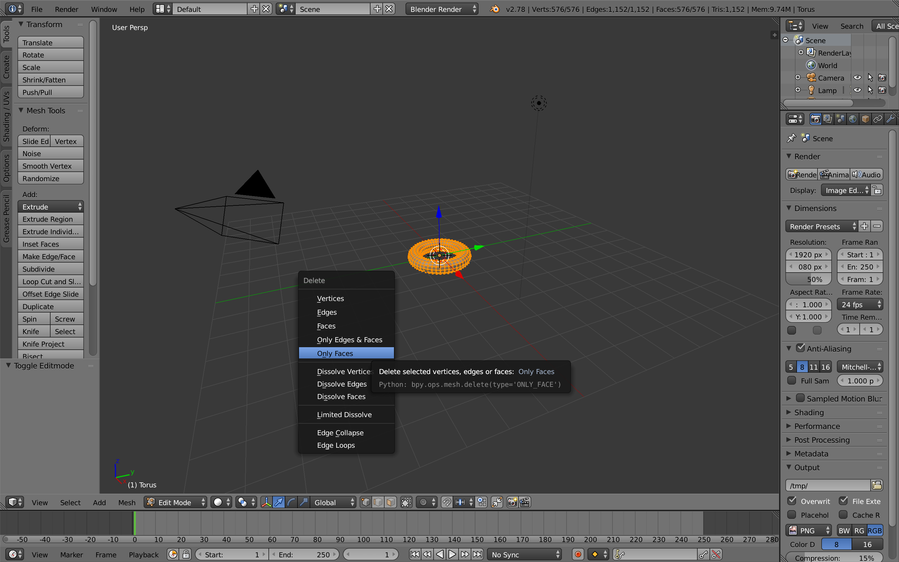

Step 1
1.) Open the Blender and delete default cube.

Step 2
2.) Add or create any mesh you want.
Step 3
3.) After you are content with your creation, go to edit mode and press x and then delete only faces.
Step 4
4.) Then, select File => Export => Wavefront (.obj)
Step 5
5.) Save file with only following options: Include Edges, Keep Vertex Order